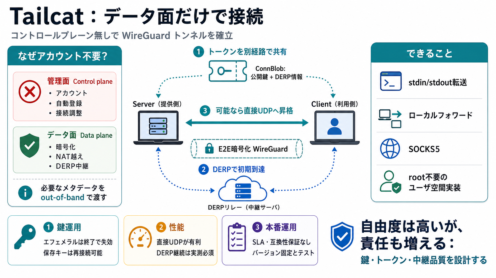

tailscale/tailcat: like netcat, but over Tailscale's data plane, without Tailscale's control plane
Initial source page

Eyebrow / 帯
一度の合図（トークン）で、WireGuard暗号化とDERPフォールバックへつなぐ。
メッセージ
コントロールプレーン無しで接続するには、接続に必要な“メタデータ”を out-of-band に渡す必要があります。
フォールバック
直接つながらない場合でもDERPを使うため、通信が成立しやすい設計です（ただし性能は変動し得ます）。
位置づけ
“ルーティング/DNS変更しないユーザ空間ライブラリ”として、root権限不要を強調しています。
結論
性能が必要なら実測が必須で、DERP“固定”を前提にしないほうが安全です。
Takeaway
“コントロールプレーン無し”は自由でもあり、責任も増やす。鍵と中継品質を管理できるなら選択肢になる。
Initial source page
CAT tokens are a CWT based token. Refer to the CBOR Web Token (CWT) - (RFC8392) standards document for more information.…
On this page Relayed connections using DERP servers DERP server locations Custom DERP servers Custo…
### DERP This directory (and subdirectories) contain the DERP code. The server itself is in `../cmd/derper`. DERP is a…
EtherCAT (Ethernet for Control Automation Technology) is an Ethernet-based industrial fieldbus protocol, invented by Bec…